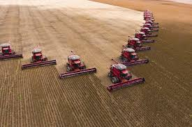
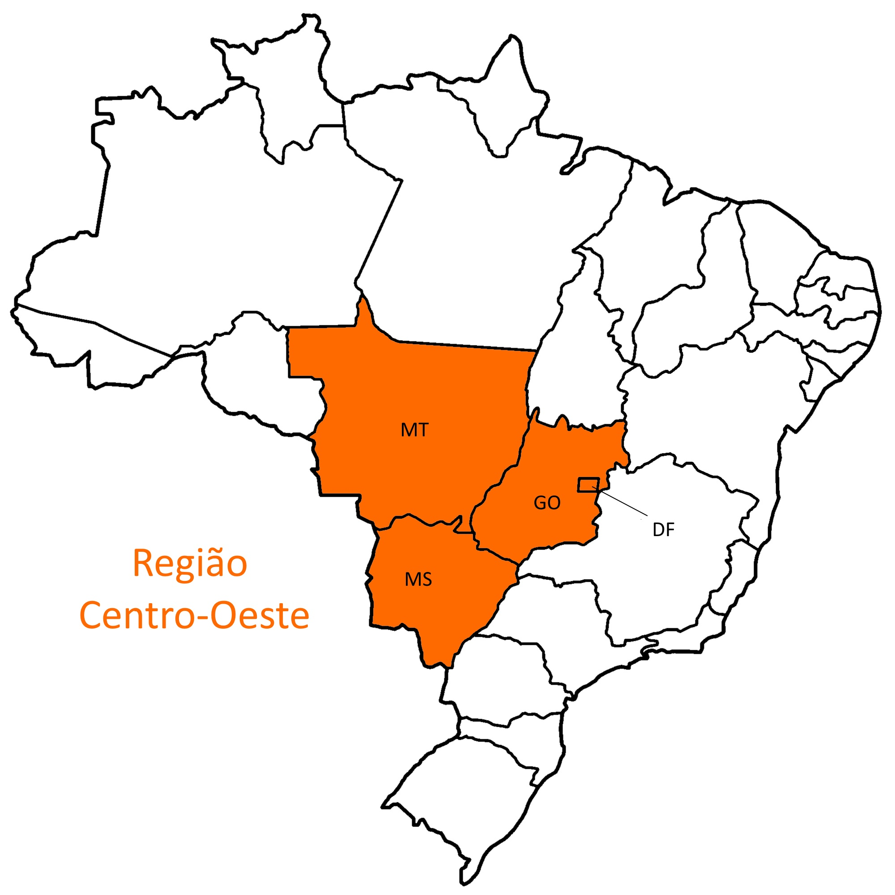
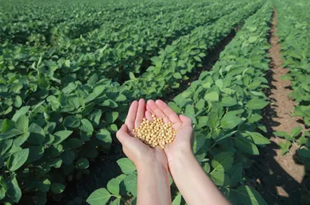

A região Centro-Oeste é compostapelos estados de Goiás (GO),
Mato Grosso (MT), Mato Grosso do Sul (MS) e o Distrito Federal (DF),
onde está situada a capital do País, Brasília. A região possui o
baseamento de sua economia nas atividades primárias, por sua vez
sendo a região de maior produção de grãos do Brasil.
Contudo, a agricultura centro-oestina basea-se na produção
agrícola de produtos como algodão, sorgo, milho, feijão,
soja, cana-de-açúcar, tomate e girassol. Vale ressaltar ainda,
que as cidades que lideram o ranking das mais ricas no agronegócio
são Sorriso, Campo Novo do Parecis e Sapezal; as quais pertencem
ao Mato Grosso.


